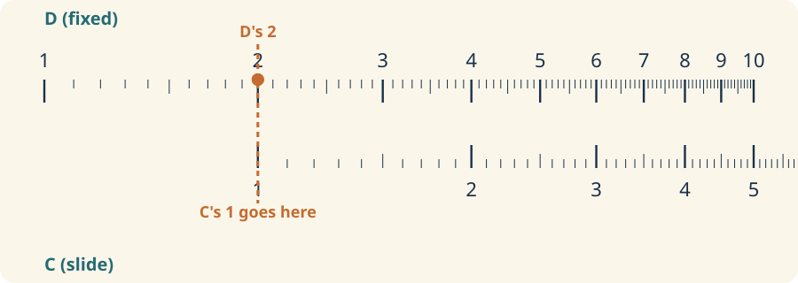
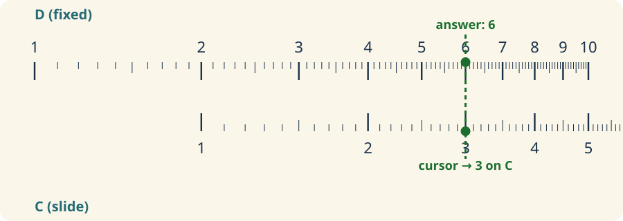
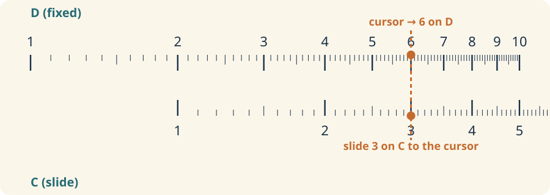
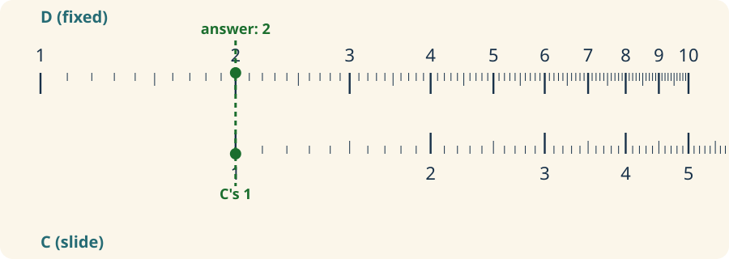
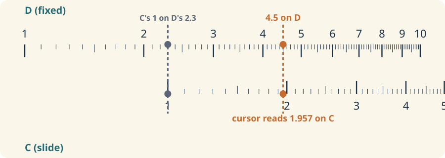
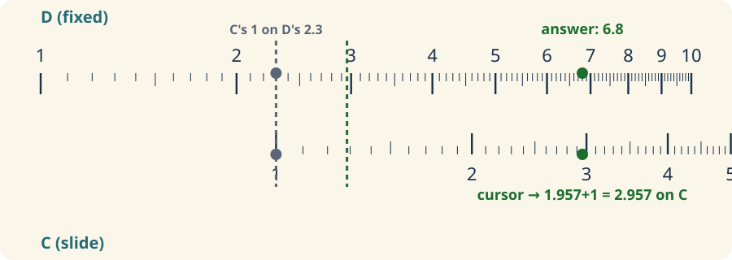

These are the core working scales on most slide rules. If you can use C and D well, you can multiply, divide,
and read most of the rest of the rule with confidence.
Core idea
One scale moves, one scale reads.
The C scale is the moving scale. The D scale is the fixed working scale. To multiply, line up 1 on C with
the first factor on D, then read the second factor on C under the product on D.
Use the same idea for division, but reverse the reasoning.
Keep the decimal place in your head; the rule shows the digits, not the decimal point.
Move slowly at first and say the factors out loud.
Practice
Try this sequence
1. Place 1 on C over 2 on D.
2. Find 3 on C.
3. Read the answer on D. It should land at 6.
Once that feels natural, try 4 x 1.5 and 6 x 1.4. If you can do those quickly, you are ready for the
two-decade scales.
Worked examples
Multiply: 2 × 3 = 6

Step 1. Slide C until its 1 lines up with 2 on D.

Step 2. Move the cursor to 3 on C. Read the answer — 6 — on D underneath it.
Divide: 6 ÷ 3 = 2

Step 1. Put the cursor on 6 (the D scale). Slide C until its 3 sits under the cursor.

Step 2. Read D underneath C's 1. That is the answer — 2.
Why not addition and subtraction, directly? C and D are logarithmic scales — lining them up
adds or subtracts the logarithms of two numbers, which multiplies or divides the numbers themselves.
There is no tick mark you can just line up and read x + y off, the way you read x × y. Slide rules exist
to speed up multiplication, division, roots, powers, and trig; addition and subtraction were normally just
done by hand. That said — there's a disguised-multiplication trick that gets you there anyway. See below.
Party trick: adding with C and D — 2.3 + 4.5 = 6.8
To add x and y, find a multiplier m such that x × m = x + y, which works out to m = y⁄x + 1.
The slide rule can't read x + y directly, but it's very good at reading a multiplication — so you look
up the ratio, add 1 in your head, and let the rule do the rest.

Step 1. Slide C's 1 to 2.3 on D. Move the cursor to 4.5 on D and read the ratio underneath on C — 1.957.

Step 2. Add 1 to that ratio in your head — 2.957 — and move the cursor there on C. Read the answer, 6.8, on D underneath.
Trick via Derek Ross's
Slide Rule Tricks (2005) — the
same author behind the N909-ES simulation this page is built on. His post also describes an addition trick
using the L scale, but that one only works on rules where L is printed on the slide. On this particular
N909-ES, L is printed on the fixed bottom stator, so that version doesn't apply here.
Go deeper
The International Slide Rule Museum's free course covers this in more detail, with its own diagrams and worked examples.